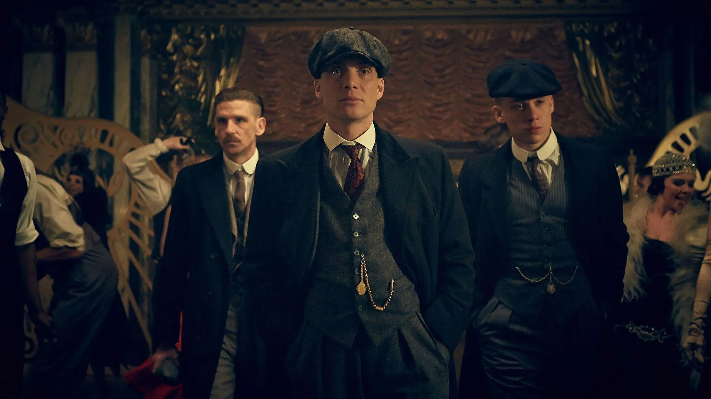
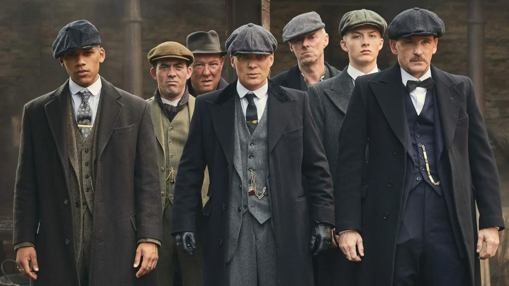
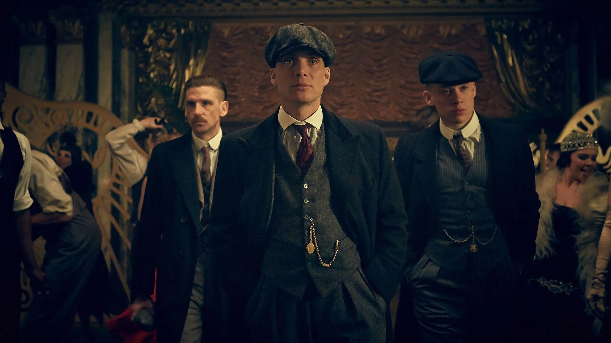
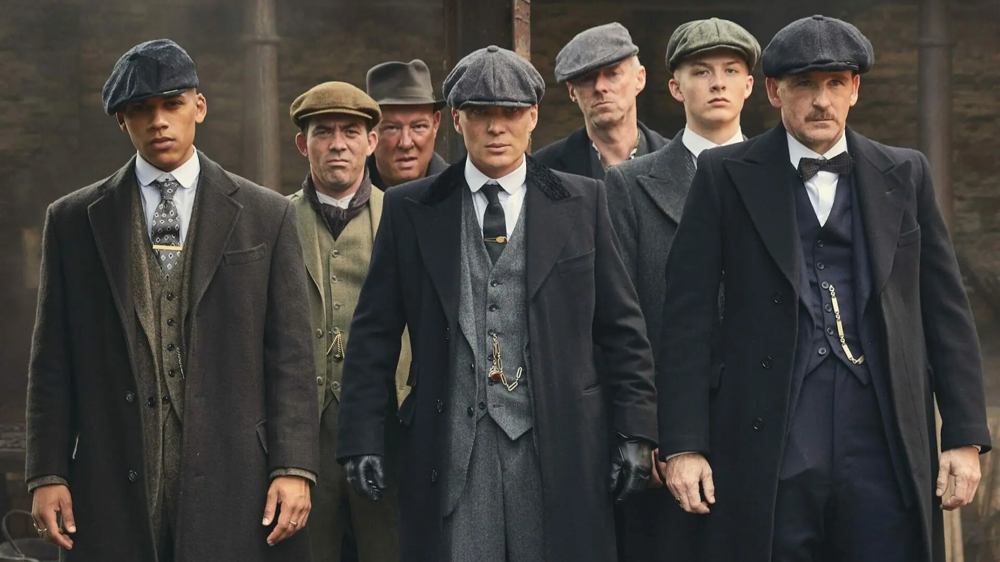

A série conta a história da família Shelby e sua gangue chamada Peaky Blinders, que comanda a cidade de Birmingham. O seu início acompanha Tommy Shelby, um ex-soldado de guerra e chefe dos Peaky Blinders, que está de volta a sua cidade natal para retomar os negócios ilegais da familia. No entanto, a história da série vai muito além das gangues e do enrendo dramático que cativou o público.